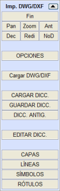
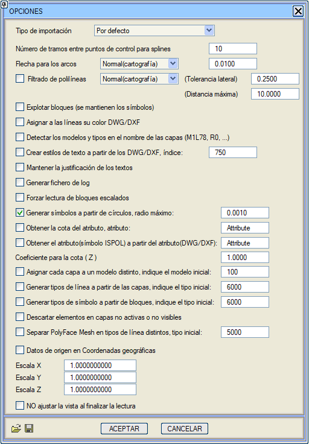
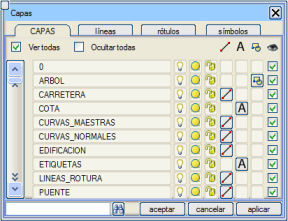
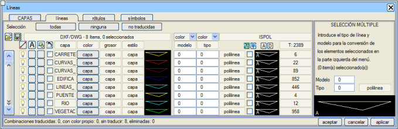
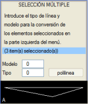
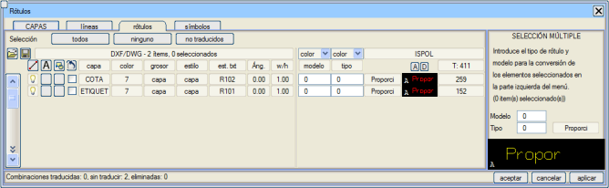
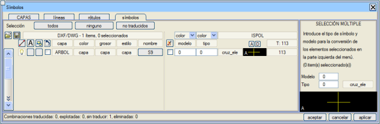
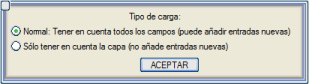
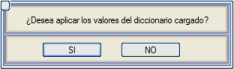

Genel Bilgiler
Dosya → İçe Aktar → DWG/DXF seçeneği seçildiğinde, bu formattaki bir veya daha fazla dosyayı içe aktarırken gerekli olan her şeyi yönetmeyi sağlayan menü görüntülenir.
[BİTİR] butonu içe aktarma işlemini sonlandırmaya yarar ve bu butona basıldığında DWG/DXF içe aktarma menüsü kapanır.
[Pan], [Zoom], [Önceki], [Sonraki], [Yeniden Çiz], [NoD] butonları, ISTRAM®/ISPOL®'ün diğer menülerindekiyle aynı işlevselliğe sahiptir.
Program, her türlü .dwg/.dxf dosyası sürümüyle uyumludur.
Seçenekler
[SEÇENEKLER] butonuna tıklandığında, içe aktarılması amaçlanan DWG/DXF dosyalarını işlerken kullanılacak temel ayarları gösteren bir açılır menü belirir.

İçe Aktarma Tipi açılır listesi, kullanıcıya dört farklı içe aktarma yöntemi arasından seçim yapma imkanı tanır, ancak bu seçenekler için yapılandırma dosyaları yüklemeye devam edebilir. Ön tanımlı yapılandırmalar şunlardır:
- Varsayılan: İçe aktarıcının standart seçeneklerle bir içe aktarma işlemi gerçekleştirdiği ayarlar.
- Orijinal Autocad: Bu yöntem seçildiğinde, içe aktarma işlemi tamamlandığında sonuç çizimin görünümünün orijinal DWG/DXF dosyasına benzer olması için gerekli kutucuklar aktif hale gelir.
- Orijinal Ispol: Bu seçenek seçildiğinde, içe aktarıcı, muhtemelen yine ISTRAM®/ISPOL® ile oluşturulmuş bir dosyayı geri yüklemeye çalışır.
- Hızlı: Bu seçenek, mümkün olan en hızlı ve en basit içe aktarma işlemini yapmak için tüm seçeneklerin işaretini kaldırır.
Bu iletişim kutusundaki içe aktarma seçenekleri aşağıda açıklanmaktadır:
- Spline'lar için kontrol noktaları arası segment sayısı: Bu değer, bir spline'dan bir çizgi oluşturulurken, bu çizginin spline'a mümkün olduğunca yakın olmasını sağlamak için spline segmentlerinin kaç parçaya bölüneceğini belirtir. Değer ne kadar yüksek olursa, çizgi spline'a o kadar çok yaklaşır. Varsayılan değeri 10'dur.
- Yaylar için Yay-Kiriş Mesafesi (Flecha): Bu alanda, dairelerden, elipslerden, yaylardan, eliptik yaylardan ve genel olarak yaylardan oluşan herhangi bir elemandan poliline oluşturmak için kullanılacak yay-kiriş mesafesi değeri belirtilir. Varsayılan olarak, Yapılandırma → Tercihler → Seçenekler → Eğri Yumuşatma iletişim kutusunda belirtilen Yay-Kiriş Mesafesi alanındaki değeri alır. Bu değer sadece içe aktarılacak dosyaları işlerken geçerlidir, yani bu iletişim kutusunda değiştirilirse, genel Yay-Kiriş Mesafesi değeri değiştirilmez. İlgili açılır liste, üç ön tanımlı Yay-Kiriş Mesafesi değerinden oluşur (ancak istenen değer girilebilir):
Normal (Harita):
Orta (Profiller):
Hassas (Detaylar):
|
0.01
0.001
0.0001 |
- Poliline Filtreleme: Bu alanda, içe aktarma dosyaları işlendikten sonra polilineleri filtrelemek için Yanal Tolerans ve Maksimum Mesafe değerleri belirtilir. Varsayılan olarak, Araçlar → Haritayı Temizle → Temizleme Parametrelerini Tanımla iletişim kutusunda belirtilen değerler alınır. Bu değerler sadece içe aktarılacak dosyaları işlerken geçerlidir, yani bu iletişim kutusunda değiştirilirse, genel Yanal Tolerans ve Maksimum Mesafe değerleri değiştirilmez. İlgili açılır liste, üç ön tanımlı değerden oluşur (ancak istenen değerler girilebilir):
|
Yanal Tolerans
|
Maksimum Mesafe
|
Normal (Harita)
|
0.25
|
10.0000
|
Orta (Profiller)
|
0.05
|
2.0000
|
Hassas (Detaylar)
|
0.0005
|
0.0200
|
Filtrelemenin gerçekleştirilebilmesi için kutucuğun işaretli olması gerekir.
- Blokları Patlat (Sembolleri Korur): Bu seçenek işaretliyse, DWG/DXF bloklarından noktalar oluşturulduğunda, bu noktalar yerleştirme noktası artı bloğa ait grafik bilgiden oluşur. Eğer seçenek işaretli değilse, içe aktarılacak çizimde bir blok tespit edildiğinde ekranda sadece yerleştirme noktası gösterilir ve bloğun grafik bilgisi gizli kalır, ancak bu bilgi daha sonra SEMBOLLER iletişim kutusundan gösterilebilir.
- Çizgilere DWG/DXF rengini ata: Bu seçenek işaretliyse, içe aktarılan dosyalardan oluşturulan çizgiler DWG/DXF çizimindeki renkleriyle gösterilir. Eğer seçenek işaretli değilse, çizgiler tipe göre renklendirilir. Çizgilerin rengiyle ilgili tüm bilgiler, içe aktarma işlemi yapıldıktan sonra ÇİZGİLER yapılandırma iletişim kutusundan düzenlenebilir.
- Katman adından model ve tipleri algıla (M1L78, R0,…): Bu seçenek seçildiğinde, dosyalar içe aktarılırken her bir nesnenin tipi ve modeli, eğer elemanın ait olduğu katmanda kodlanmışsa, algılanmaya çalışılır. Bunun için katmanların MxTy tipinde olması gerekir; burada 'x' model, 'y' ise tip olarak yorumlanır. Bu seçenek, daha önce ISTRAM ®/ISPOL® ile oluşturulmuş bir haritayı geri yüklemeye çalışırken kullanışlıdır.
- DWG/DXF'ten yazı stilleri oluştur, başlangıç indeksi: Bu seçenek etkinleştirildiğinde, DWG/DXF'te tanımlanan yazı stillerinin ISTRAM®/ISPOL®'de tanımlanan stillerle eşleşip eşleşmediği kontrol edilir. DWG/DXF'teki bir stilin ISTRAM®/ISPOL®'deki hiçbir stille eşleşmemesi durumunda, belirtilen indeksten itibaren boşta olan stiller kullanılarak yeni bir stil oluşturulur.
- Yazıların hizalamasını koru: Bu seçenek seçildiğinde, dosyadan yüklenen yazılar orijinal hizalamalarını korur.
- Log dosyası oluştur: Bu seçenek seçildiğinde, her bir .dwg/.dxf dosyası çevrildikten sonra, Info DWG tarih saat.txt adında küçük bir rapor dosyası oluşturulur ve bu dosyada çevrilecek dosyada bulunan nesnelerin bir özeti gösterilir.
- Farklı ölçekli blokları okumaya zorla: Bu seçenek etkin DEĞİLSE, sadece (X,Y,Z) = (1,1,1) ölçek faktörlerine sahip blok referansları içe aktarılır. Aksi takdirde, herhangi bir (X,Y,Z) ölçeğindeki blok referansları içe aktarılır.
- Dairelerden sembol oluştur, maksimum yarıçap: Bu seçenek etkinleştirildiğinde, seçenekte belirtilen yarıçaptan daha küçük yarıçapa sahip tüm daireler tip 0 sembollerine dönüşür (bu tip, sembol çeviri iletişim kutusunda değiştirilebilir). Sembolün yerleştirme noktası dairenin merkezidir ve dairenin kotuyla aynı kotu alır.
- Kot bilgisini öznitelikten al, öznitelik: Bu kutucuk etkinleştirildiğinde, seçenekte belirtilenle aynı ada sahip bir özniteliği olan semboller, kot olarak o özniteliğin değerini alır.
- Özniteliği (ISPOL sembolü) öznitelikten (DWG/DXF) al: Bu seçenek, öznitelik değerini sembolün kotuna atamak yerine sembolün özniteliğine ataması dışında, bir öncekiyle aynı şekilde çalışır.
- Kot (Z) için katsayı: İçe aktarılacak dosyadan gelen kot değerlerine belirtilen katsayıyı uygular.
- Her katmanı farklı bir modele ata: İçe aktarılacak dosyanın her katmanındaki nesneleri, bitişik metin kutusunda belirtilenden başlayarak boşta olanlar arasından seçilen farklı bir modele atar.
- Katmanlardan çizgi tipleri oluştur: İçe aktarılacak dosyada kullanılanlardan yeni çizgi tipleri oluşturur; numaralar, bitişik metin kutusunda belirtilenden başlayarak boşta olanlar arasından seçilir.
- Bloklardan sembol tipleri oluştur: İçe aktarılacak dosyanın bloklarından yeni semboller oluşturur; numaralar, bitişik metin kutusunda belirtilenden başlayarak boşta olanlar arasından seçilir.
- Aktif veya görünür olmayan katmanlardaki elemanları atla: İçe aktarma işlemini, aktif veya görünür bir katmanda OLMAYAN elemanları yoksaymaya zorlar.
- Kaynak veriler coğrafi koordinatlarda: Bu seçenek etkinleştirildiğinde ve dosya yüklendiğinde, ekranda enlem-boylam koordinatları derece/dakika/saniye olarak gösterilir.
- İçe aktarma sırasında X, Y, Z'de ölçekleme yapılabilir.
- Okuma sonunda görünümü ayarlama: Bu seçenek etkinse, dosyaların okunması sonunda görünümü ayarlamadan mevcut zoom korunur.
İçe aktarma ayarları tanımlandıktan sonra, artık içe aktarılmak istenen .dwg/.dxf dosyalarını seçmeye hazırsınız. Bunun için [DWG/DXF Yükle] butonuna basılır ve ardından içe aktarılacak dosyaları (aynı anda en fazla 10 adet) seçmeyi sağlayan bir dosya seçici belirir. İçe aktarma süreci başlar; bu süreç önce dosya bilgileriyle veritabanını oluşturmaktan ve ardından bunu yorumlamaktan oluşur. Bir ilerleme çubuğu, sürecin bu aşamalarının her birini gösterir.
Tüm nesneler tip 0 ve model 0'a çevrilir. DWG/DXF blokları tip 0 sembollerine çevrilir ve daha sonra onlardan yeni semboller oluşturulabilmesi için geometrik olarak patlatılır. Bir eleman DWG/DXF'te görünür olmayan veya kullanılmayan bir katmandaysa, bu eleman -1 tipine sahip olur ve dolayısıyla pasif kalır.
Ayrıca, okunması sırasında patlatılabilen ACAD_PROXY_ENTITY tipi nesneler de dönüştürülür. İçe aktarıcıda çevrilen bu yeni nesneler, DWG/DXF'te patlatılabilen ve daha sonra bunları içeren dosyanın patlatılmış nesneyle kaydedilebildiği nesnelerdir. Oluşturuldukları uygulamanın bu elemanların patlatılmasına izin vermemesi nedeniyle yorumlanamayan ACAD_PROXY_ENTITY tipi elemanlar hala mevcuttur.
İçe aktarıcıda Surface/Yüzey elemanlarının işlenmesini de kapsar.
Yarıçapı 0 olan daireler ISTRAM®/ISPOL®'de sembollere çevrilir. Sembol çeviri iletişim kutusunda bunlar CIRCLE_0 adıyla görünür. Ayrıca, içe aktarma tamamlandığında, bu türden elemanlar (yarıçapı 0 olan daireler) bulunduysa, elemanın kaç kez geçtiğini gösteren bir mesaj görüntülenir.
Dosyaların çeviri süreci tamamlandığında, yani harita ekranda göründüğünde, geriye kalan tek adım, içe aktarma sonrası oluşturulan yeni nesneleri özelleştirmektir. Bu, her bir nesneyi (çizgiler, semboller ve yazılar) manuel olarak değiştirerek veya daha önce oluşturduğumuz bir dönüşüm sözlüğü aracılığıyla otomatik olarak yapılabilir. Şu anda içe aktarılan nesneler şunlardır: çizgiler, polilineler, yüzeyler (faces), yaylar, daireler, elipsler, spline'lar, katılar (solids), 2D polilineler, 3D polilineler, taramalar (rellenos), yazılar, öznitelikler, çoklu metinler, hizalı ölçülendirmeler, döndürülmüş ölçülendirmeler, radyal ölçülendirmeler, çap ölçülendirmeleri, açısal ölçülendirmeler, blok referansları, noktalar ve DWG/DXF dosyalarıyla çalışan uygulamalarla oluşturulmuş belirli nesneler. Her an, çevrilen kombinasyonların sayısı hakkında ekranda bilgi sunulur. Ayrıca, fareyi herhangi bir düğmenin üzerine getirdiğinizde, o düğmenin işlevselliğini belirten bir etiket belirir.
Katman Yöneticisi
Sağdaki dikey menüdeki [KATMANLAR] butonu aracılığıyla erişilen küçük ve pratik bir (DWG/DXF) katman yöneticisi bulunmaktadır. Bu butona basıldığında, sağda gösterilen görünüme sahip bir iletişim kutusu sunulur.
Tümünü Göster ve Tümünü Gizle kutucukları, sırasıyla tüm içe aktarılan katmanları göstermeye veya gizlemeye yarar.
Her katman için gösterilen bilgiler şunlardır:
- DWG/DXF katmanının adı
- DWG/DXF'te katman görünür/görünmez
- DWG/DXF'te katman kullanılıyor/kullanılmıyor
- DWG/DXF'te katman kilitli/kilitli değil
- Katmanda çizgi var/yok
- Katmanda yazı var/yok
- Katmanda sembol var/yok
- Katmanı ISTRAM®/ISPOL®'de göstermek veya göstermemek için kutucuk
Katmanın çizgiler, yazılar ve/veya semboller içermesi durumunda, 5, 6 ve 7 numaralı butonlara tıklayarak sırasıyla çizgi, yazı ve sembol düzenleme diyaloglarına geçilir ve o katmandaki tüm elemanlar seçili olur.
Bu iletişim kutusunun alt kısmında, katman araması yapmayı sağlayan bir metin alanı bulunur. Arama alanına katman adı girilip <Enter> tuşuna basılırsa veya sağdaki simgesine tıklanırsa, girilenle eşleşen bir katman varsa, diyalogun ilk satırında gösterilir.
Çizgi Dönüşümü
Çizgi butonu 5'e veya dikey menüdeki [ÇİZGİLER] butonuna veya [Çizgiler] sekmesine tıklandığında, aşağıdaki görünüme sahip bir diyalog gösterilir:

İçe aktarma menüsü aktif olduğu sürece, çizgilerin bilgi etiketlerinin davranışı değişir; program, fare imlecinin üzerinde bulunduğu çizgiyle aynı katmana ait olan tüm çizgileri vurgular.
Her bir eleman için saklanan bilgiler şunlardır:
 |
1
|
2
|
3
|
4
|
5
|
6
|
7
|
8
|
9
|
10
|
11
|
12
|
13
|
14
|
15
|
- Elemanın DWG/DXF katmanının görünür ve kullanımda olup olmadığını bildirir.
- Elemanın DWG/DXF katmanında yazı olup olmadığını belirtir. Eğer bu buton A harfi ile süslenmişse, üzerine tıklandığında yazı düzenleme diyaloğu gösterilir ve ilk satırda o DWG/DXF katmanında bulunan ilk yazı kombinasyonu belirir. Eğer buton süslenmemişse, üzerine tıklandığında hiçbir işlem yapılmaz.
- Elemanın DWG/DXF katmanında blok olup olmadığını belirtir. Eğer bu buton bir DWG/DXF blok sembolü ile süslenmişse, üzerine tıklandığında sembol düzenleme diyaloğu açılır ve ilk satırda o DWG/DXF katmanında bulunan ilk blok kombinasyonu gösterilir. Eğer buton süslenmemişse, üzerine tıklandığında hiçbir işlem yapılmaz.
- Satırın seçili olup olmadığını belirtir. Grafik penceresinde nesneye tıklamak yeterlidir ve seçilecektir. Seçili elemanlar üzerindeki işlem aşağıda açıklanmıştır.
- DWG/DXF katmanının adını belirtir. Sadece bilgilendirme amaçlı bir elemandır.
- DWG/DXF rengini belirtir. Değeri katman (eleman rengini DWG/DXF katmanından alır), blok (eleman bloğa göre renkle tanımlanmış) veya 1 ile 255 arasında DWG/DXF renk paletinin indeksini belirten bir değer olabilir. Bu butona tıklandığında, aynı renge sahip tüm çizgi kombinasyonları seçilir, ayrıca daha önce seçilmiş olabilecek kombinasyonlar da dahil edilir.
- DWG/DXF'teki çizgi kalınlığı tipi hakkında bilgi verir.
- DWG/DXF'teki çizgi stili tipi hakkında bilgi verir.
- Elemanın DWG/DXF'teki rengini temsil eder.
- Bu alan düzenlenebilir ve satırla ilişkili çizgi kombinasyonunun modelini değiştirmeye yarar. Varsayılan değeri 0'dır. Açılır liste, seçili elemanların modelini renklerine, kalınlıklarına veya 0'a çevirmeye yarar.
- Bu alan düzenlenebilir ve satırla ilişkili çizgi kombinasyonunun tipini değiştirmeye yarar. Varsayılan değeri 0'dır. Eğer bu alanda -1 değeri varsa, o kombinasyonla ilişkili içe aktarılan çizgiler ISTRAM ®/ISPOL®'de pasif hale gelir. Açılır liste ile seçili elemanların tipi renklerine, kalınlıklarına veya 0'a çevrilir.
- Dönüşüm tipinin adı (bilgilendirme alanı).
- Çizginin DWG/DXF'teki rengiyle mi yoksa tipe göre renkle mi temsil edildiğini belirten kutucuk. Varsayılan olarak renk, tipe göredir.
- ISTRAM®/ISPOL®'deki gösterim rengi. Hemen üstünde ayrıca iki buton gösterilir. [A] butonu tüm çizgileri aktif eder ve [D] butonu çevrilmiş çizgileri pasif hale getirir.
- İçe aktarılan çizgiler (toplam ve DWG/DXF katmanına göre).
Diyalogdaki diğer seçenekler:
| [Tümü] / [Hiçbiri] |
Tüm çizgi kombinasyonlarını seçer/seçimini kaldırır. |
| [Çevrilmemiş] |
Çevrilmemiş tüm çizgileri, yani tipini 0'da tutanları seçer. |
Son olarak, çoklu eleman dönüşümleri yapmak için, diyalogun sağ tarafı kullanılır ve işlevselliği aşağıda detaylandırılmıştır.
Model alanına, diyalogun sol tarafında seçili olan elemanlara atanmak istenen model girilir. Örnekte gösterildiği gibi bu alandan sonra # karakteri belirirse, bu, menünün sol tarafında seçilen tüm elemanların aynı modele sahip olmadığını gösterir. Aksine, hiçbir eleman seçilmemişse veya seçilenlerin tümü aynı modele sahipse, bu alanda tüm seçilenlere ortak olan model gösterilir ve # karakteri görünmez.
Tip alanı, Model alanı ile aynı çalışma felsefesine sahiptir, yani seçilen tüm elemanlar aynı tipe sahipse veya hiçbir eleman seçilmemişse, alanın sağ tarafında # karakteri görünmez ve alan, seçilen elemanların aynı olan tipini gösterir. Diyalogun sol tarafında seçili olan tüm elemanları pasif hale getirmek için bu alana -1 değeri yazılmalıdır. Bu alanın sağındaki devre dışı bırakılmış butonda tipin adı gösterilir.
Şeklin alt kısmındaki grafik alanda, menünün sol tarafında seçilen elemanların ISTRAM®/ISPOL®'deki gösterim rengi gösterilir.
Butonlara gelince:
[Tamam]
|
Bu buton, yapılan değişiklikleri koruyarak çizgi düzenleme diyaloğunu kapatmaya yarar. |
[İptal]
|
[Uygula] butonuna son basıldığı andan itibaren yapılan değişiklikleri kaybederek diyaloğu kapatır. |
[Uygula]
|
Uygula butonu, diyalogda yapılan değişiklikleri kaybetmemeye yarar. [Tamam] butonu ile aynı işlevselliğe sahiptir ancak bu, düzenleme diyaloğunu kapatmaz. |
Yazı Dönüşümü
İşleyişi çizgiler durumuna benzer, farkı burada DWG/DXF'in yazı stili, eğiklik açısı (yani metnin eğimi) ve genişlik/yükseklik oranının gösterilmesidir.

Sembol Dönüşümü
Yine iletişim kutusu, çizgilere karşılık gelen duruma çok benzer, ancak burada sembol adına tıklandığında, ISTRAM®/ISPOL®'ün o sembol tipini kütüphaneye ekleme imkanı sunduğunu belirtmek gerekir.

Böylece, gösterilen örnekte, [S9]'a basılırsa aşağıdaki iletişim kutusu açılır:
 Buradan, içe aktarılan bloktan bir sembol oluşturmak ve bu oluşturulan sembolü ya seçili bloğa (varsayılan seçenek), ya aynı ada sahip tüm bloklara, ya mevcut seçime atamak ya da sadece sembolü oluşturup atamamak mümkündür. Buradan, içe aktarılan bloktan bir sembol oluşturmak ve bu oluşturulan sembolü ya seçili bloğa (varsayılan seçenek), ya aynı ada sahip tüm bloklara, ya mevcut seçime atamak ya da sadece sembolü oluşturup atamamak mümkündür.
Ayrıca, sembolü oluşturmadan o ada sahip tüm blokları seçmek de mümkündür.
Ekranda sembolleri seçmek için DWG/DXF bloğundan oluşturulan sembolün yerleştirme noktasına tıklamak gerekmez, sembole bağlı bir çizgiye doğrudan tıklayarak seçilebilir. Bunu yaptıktan sonra, diyalogun ilk satırında o çizgiyle ilişkili sembolün bilgileri belirir.
simgesiyle başlığı olan sütuna karşılık gelen PATLAT sütunundan, içe aktarılan DWG/DXF bloklarını göstermek veya gizlemek mümkündür. Şu şekilde çalışır:
- Eğer dikey menüdeki [SEÇENEKLER]'den Blokları Patlat (Sembolleri Korur) kutucuğu işaretliyse, o zaman bu kutucuklar da işaretli olur, semboller çizgilere patlatılmış olur ve buradan, eğer devre dışı bırakılırlarsa, o semboller görünmez ve dolayısıyla sadece yerleştirme noktası içe aktarılır.
- Eğer Blokları Patlat (Sembolleri Korur) seçeneği işaretli DEĞİLSE, o zaman buradan ilgili kutucukları işaretleyerek sembolleri patlatmak mümkündür (aksi takdirde, sadece yerleştirme noktaları içe aktarılır).
Doğrudan simgesine tıklayarak tüm sembol katmanları üzerinde genel bir işlem yapmak mümkündür.
Resim Dönüşümü
.dwg/.dxf formatındaki dosyalarda bulunan resimler de içe aktarılır. Resimlere referans veren yollarla ilgili sorunları önlemek için, ISTRAM®/ISPOL®'ün çalışma klasörünün, resimleri içeren .dwg/.dxf dosyasının bulunduğu klasörle aynı olması önemlidir.
Dönüşüm Sözlükleri
İlgilenilen tüm elemanların çevirisi özelleştirildikten sonra, bu bilgiyi bir dosyaya kaydederek sonraki çevirilerde yüklemek ve aynı işi birden fazla yapmaktan kaçınmak mümkündür. Bunun için sağdaki menüdeki [SÖZLÜK KAYDET] butonuna veya iletişim kutusundaki  simgesine tıklanır ve dönüşüm sözlüğüne bir ad atanan bir dosya seçici belirir. [SÖZLÜK KAYDET] butonu ile simgesini kullanmak arasındaki fark, ilk durumda her zaman .cod dosyası için bir ad istenmesi, ikinci durumda ise sadece daha önce oluşturulmamışsa istenmesidir. simgesine tıklanır ve dönüşüm sözlüğüne bir ad atanan bir dosya seçici belirir. [SÖZLÜK KAYDET] butonu ile simgesini kullanmak arasındaki fark, ilk durumda her zaman .cod dosyası için bir ad istenmesi, ikinci durumda ise sadece daha önce oluşturulmamışsa istenmesidir.
Bu bilgiyi sonraki oturumlarda yüklemek için [SÖZLÜK YÜKLE] butonuna veya  simgesine tıklanmalı ve daha önce kaydedilen dosya seçilmelidir. Ardından program, tüm özellik kombinasyonları yerine sadece katmana göre sözlükleri yükleme seçeneği sunar ve iki olasılık sunar: simgesine tıklanmalı ve daha önce kaydedilen dosya seçilmelidir. Ardından program, tüm özellik kombinasyonları yerine sadece katmana göre sözlükleri yükleme seçeneği sunar ve iki olasılık sunar:
- Normal (varsayılan): Bu durumda tüm alanlar (katman, renk, kalınlık ve stil) dikkate alınır, böylece içe aktarma bu alanların kombinasyonlarına göre yapılır. Eğer sözlük tüm olası kombinasyonları içermiyorsa, program sözlük tarafından kapsanmayan her bir kombinasyon için yeni bir girdi oluşturur.
- Sadece katmanı dikkate alarak: İçe aktarıcı, sözlüğü uygulamak için sadece katman adını dikkate alır ve dolayısıyla yeni girdiler oluşturulmaz.
Dosya yüklendikten sonra program, sözlükte yüklenen bilgiyi uygulamak mı yoksa sadece bellekte saklamak mı istediğinizi sorar.
Eğer EVET yanıtı verilirse, dosyadan yüklenen ve bellekteki mevcut bir kombinasyonla eşleşen eleman kombinasyonları mevcut haritaya uygulanır; aksine HAYIR yanıtı verilirse, bilgi sadece belleğe yüklenir ancak mevcut haritada değişiklik uygulanmaz.
Programın eski sürüm sözlüklerini, yani .dwg dosyalarını yüklemeye izin veren sürümden öncekileri yüklemek için, [ESKİ SÖZLÜK] butonuna basılmalı ve yüklenecek sözlük seçilmelidir. Bu durumda, ekrandakilerle eşleşen kombinasyonlar yüklenir ve önceki durumda olduğu gibi, sadece bilgiyi yüklemek mi yoksa ekrandaki haritaya da uygulamak mı istediğinizi belirtmeniz gerekir.
Bir sözlük yüklemek istiyor ancak hangi bilgileri sakladığını tam olarak bilmiyorsanız, [SÖZLÜK DÜZENLE] butonuna basıldığında, not defterinde görüntülenecek sözlüğün seçileceği bir dosya seçici belirir.
Hızlı DWG/DXF Nesnesi İçe Aktarma
Program, Autocad®'den bir veya daha fazla grafik nesnesini kopyalayıp ISTRAM®/ISPOL®'e yapıştırma imkanı sunar. Autocad®'den nesne(ler)i kopyalamak için <Ctrl + C> ve ISTRAM®/ISPOL®'e yapıştırmak için <Ctrl + V> tuş kombinasyonunu kullanmak çok pratiktir.
Bu metodolojiyi, örneğin bir kapalı alan (recinto) için bir çizgi veya bir güzergah projesi elemanı için referans çizgisi olarak, içe aktarma ekranından geçmeye gerek kalmadan içe aktarmak çok kullanışlıdır.
Ancak bu işlevsellik, yalnızca aşağıdaki DWG/DXF grafik nesne sınıflarıyla sınırlıdır:
- Çizgiler
- 2D ve 3D Polilineler
- Yaylar
- Daireler
- Elipsler
- Spline'lar
ISTRAM®/ISPOL® ortamına yapıştırıldıktan sonra, mevcut tip ve modele ait çizgilere dönüşeceklerdir.

|
Bu özelliğin doğru çalışması için, yapıştırma işlemi gerçekleştirilene kadar Autocad® programının açık kalması gerekebilir.
|
|